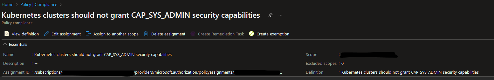

Kris's Quick Cup of (A)K8S #3 - (Cluster)Role Management
One day I was going through Azure Policies for Kubernetes and suddenly saw an alert related to the following policy for one of the AKS clusters: Kubernetes clusters should not grant CAP_SYS_ADMIN security capabilities. What this basically means is that you shouldn't have any accounts in your cluster that have been assigned a ClusterRole or Role with CAP_SYS_ADMIN capabilities. CAP_SYS_ADMIN is a capability that is available in Linux. It provides a very privileged level of permissions that allows an account that has this capability to perform a range of system administration operations which can potentially be harmful and damaging for the whole system. You can read more about this capability here: capabilities(7) — Linux manual page.

An example of a ClusterRole with such capabilities is system:aggregate-to-edit. Obviously we want to follow the principle of least privilege which means that we want to ensure that there are no accounts that have a high level of permissions in our clusters, unless it's absolutely necessary. Therefore it's investigation time!🧐
It´s important to mention that you should perform this check both for Roles which set permissions in a particular namespace and ClusterRoles which can set cluster-wide permissions because it can be both! Though we can get information about which ClusterRole or Role violates this policy from the Azure Portal, we don't necessarily get enough information about which accounts it was assigned to. So the question is: if I were to investigate further if there are any accounts that have been assigned a highly privileged ClusterRole or Role in my Kubernetes cluster, is there a way I can easily check that? The answer is: Oh Yes!😻
Now, in order to demonstrate you how to do that I'll be using an AKS cluster but the same commands will work for any other Kubernetes distribution. As mentioned above, we'll be checking both for ClusterRole and Role resources to be completely safe.
In order to retrieve information about usage of a specific ClusterRole or Role we can use below command - we'll also be using a customized output to display all the relevant data like ServiceAcocunt, Namespace, creation timestamp etc. In this case, we'll search for system:aggregate-to-edit ClusterRole and Role but you can replace it with any other role definition name that you need to check.
PowerShell:
kubectl get rolebindings,clusterrolebindings -A `
-o custom-columns='ServiceAccountName:subjects[?(@.kind==\"ServiceAccount\")].name,ClusterRoleName:metadata.name,ClusterRoleNamespace:metadata.namespace,ObjectKind:kind,CreatedAt:metadata.creationTimestamp' `
| Where-Object {$_ -match '[ \t]system:aggregate-to-edit[ \t]'}
Bash:
kubectl get rolebindings,clusterrolebindings -A \
-o custom-columns='ServiceAccountName:subjects[?(@.kind=="ServiceAccount")].name,ClusterRoleName:metadata.name,ClusterRoleNamespace:metadata.namespace,ObjectKind:kind,CreatedAt:metadata.creationTimestamp' \
| grep '[[:blank:]]system:aggregate-to-edit[[:blank:]]'
Here, we're also using regex to filter out entries that may start with or match the name we're searching for. In case there are any accounts that have been assigned the ClusterRole or Role we've been checking for, the output of the command will look something like this:
# Output format: [ServiceAccountName] [ClusterRoleName] [ClusterRoleNamespace] [ObjectKind] [CreatedAt]
testapp-admin system:aggregate-to-edit <none> ClusterRoleBinding 2022-06-09T14:56:16Z
testapp-admin system:aggregate-to-edit testapp RoleBinding 2022-06-09T14:56:16Z
Based on this information you can investigate further if the application that uses detected ServiceAccount really needs so many permissions or if this ClusterRole or Role really needs to be used by any workloads in the cluster.
That's it for now - Thanks for reading and till next tech tip 😼